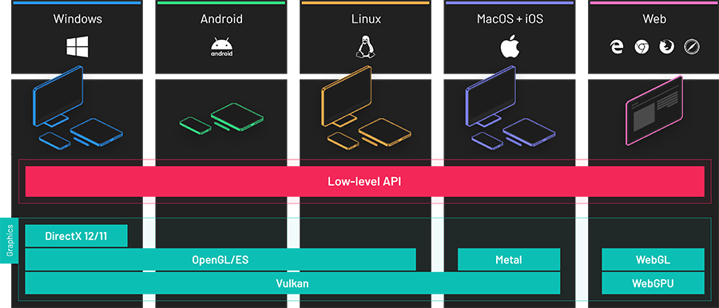
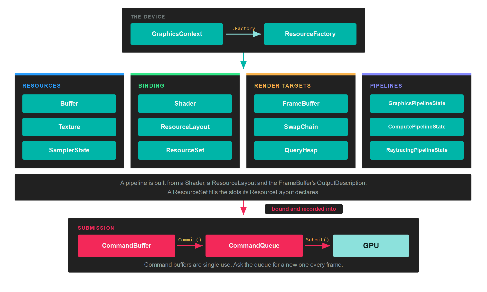
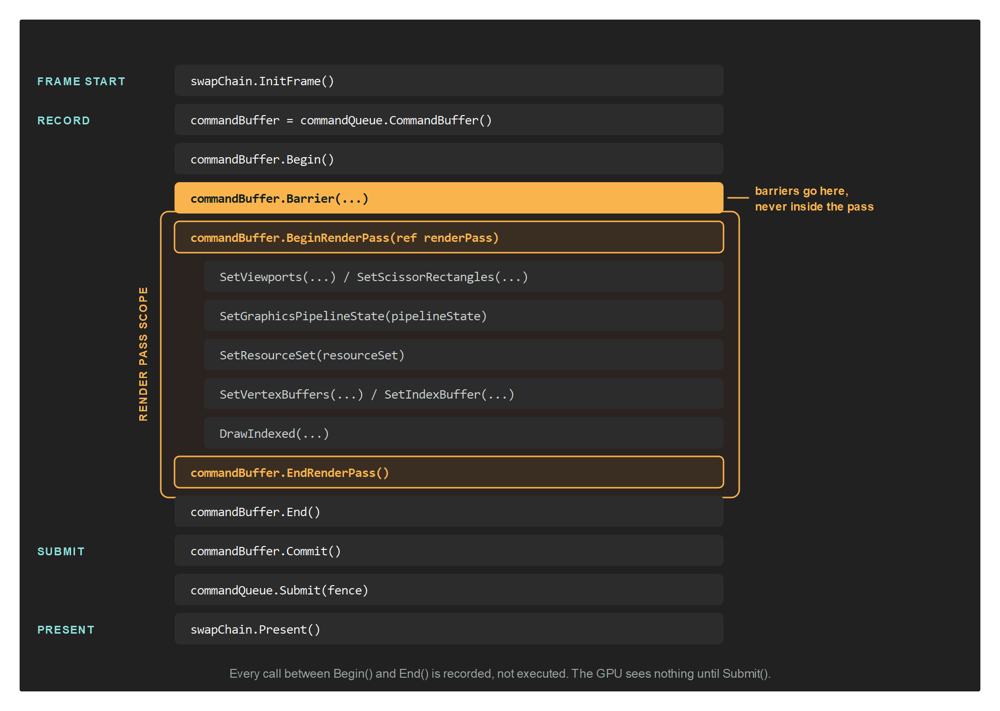
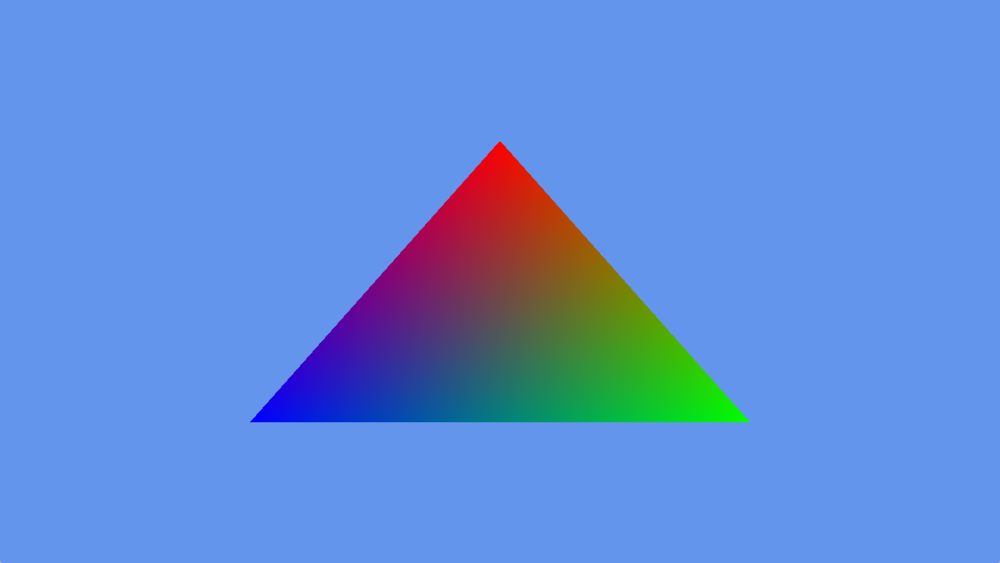

Low-level API

Evergine uses a custom low-level graphics API to send commands to the GPU.
It is a cross-platform, backend-agnostic library that runs on top of DirectX, Vulkan, OpenGL, Metal and WebGPU. Its shape follows the explicit APIs (DirectX 12, Vulkan and Metal) so that nothing is hidden from you and nothing is guessed on your behalf, while staying compatible with the older implicit ones (DirectX 11, OpenGL and WebGL).
Everything in this section sits below the component layer. You do not need any of it to build a scene with entities and components, and most applications never touch it. Reach for it when you are writing a custom render pipeline, a compute pass, or an application that has no scene at all.
Note
The Low-Level API samples repository contains complete applications built directly on this API, without the component layer.
The object graph
Two objects create everything else. The GraphicsContext is the device, and its Factory is the only way to allocate GPU objects. Everything else is either a resource the factory made or a way to describe how those resources are used.

Reading the diagram from the top:
- The GraphicsContext owns the device and the
Factory. You create one per application, choosing the concrete class for the backend you want. - The resources hold data. A
Bufferis a block of memory, aTextureis an image, and aSamplerStatesays how that image is read. - The binding objects connect resources to shaders. A
ResourceLayoutdeclares which slots a shader reads. AResourceSetfills those slots with actual resources. - The render targets say where drawing lands. A
FrameBufferis a set of attachments, and aSwapChainis the one whose result reaches the screen. - A pipeline freezes the whole configuration of a draw into one immutable object: input layout, shaders, render states, resource layouts and output formats.
- Work reaches the GPU through a CommandBuffer, which you get from a CommandQueue and give back to it.
The shape of a frame
Nothing you record executes when you call it. A command buffer accumulates commands, and the GPU sees them only after the queue submits the batch.

That ordering has three rules worth memorising:
- A command buffer is single use. Ask the queue for a new one every frame instead of keeping one around.
- Barriers go outside the render pass. Record them between
Begin()andBeginRenderPass(), or afterEndRenderPass(). Commit()hands the buffer to its queue.Submit()is what actually starts GPU work.
Here is the whole of a frame that draws one triangle, from DrawTriangleTest:
var commandBuffer = this.commandQueue.CommandBuffer();
commandBuffer.Begin();
RenderPassDescription renderPassDescription = new RenderPassDescription(this.frameBuffer, new ClearValue(ClearFlags.All, Color.CornflowerBlue));
commandBuffer.BeginRenderPass(ref renderPassDescription);
commandBuffer.SetViewports(this.viewports);
commandBuffer.SetScissorRectangles(this.scissors);
commandBuffer.SetGraphicsPipelineState(this.pipelineState);
commandBuffer.SetVertexBuffers(this.vertexBuffers);
commandBuffer.Draw((uint)this.vertexData.Length / 2);
commandBuffer.EndRenderPass();
commandBuffer.End();
commandBuffer.Commit();
this.commandQueue.Submit();
this.commandQueue.WaitIdle();

What those thirty lines produce: a cleared frame and one triangle whose colours are interpolated between its vertices.
Tip
That final WaitIdle() blocks the CPU until the GPU has drained the whole queue, which is the simplest thing that is correct and the slowest thing that works. Fence shows how to replace it once the rest of the frame is in place.
Which object do I need
| To do this | Create |
|---|---|
| Upload vertices, indices or constants | Buffer |
| Store or sample an image | Texture and SamplerState |
| Compile and load shader code | Shader |
| Declare which slots a shader reads | ResourceLayout |
| Put actual resources in those slots | ResourceSet |
| Choose where the drawing lands | FrameBuffer |
| Put the result on screen | SwapChain |
| Fix the configuration of a draw | GraphicsPipeline |
| Run work without rasterising anything | ComputePipeline |
| Trace rays against a scene | RaytracingPipeline |
| Get a command buffer and submit it | CommandQueue |
| Record draws, dispatches and copies | CommandBuffer |
| Declare that a resource changed use | Barriers |
| Know when the GPU finished a batch | Fence |
| Measure GPU time or count samples | QueryHeap |
What each backend supports
Query these at runtime through graphicsContext.Capabilities rather than testing BackendType, since ray tracing and mesh shaders depend on the physical device and not only on the API.
| Backend | Context class | Compute | Ray tracing | Mesh shaders |
|---|---|---|---|---|
| DirectX 11 | DX11GraphicsContext |
Yes | No | No |
| DirectX 12 | DX12GraphicsContext |
Yes | Device dependent | Device dependent |
| Vulkan | VKGraphicsContext |
Yes | Device dependent | Device dependent |
| Metal | MTLGraphicsContext |
Yes | No | No |
| OpenGL / OpenGL ES | GLGraphicsContext |
No | No | No |
| WebGPU | WGPUGraphicsContext |
Yes | No | No |
Important
Capabilities are the portable way to ask. Branching on BackendType instead bakes today's answer into your code, and the answer changes with the device as well as with the backend.